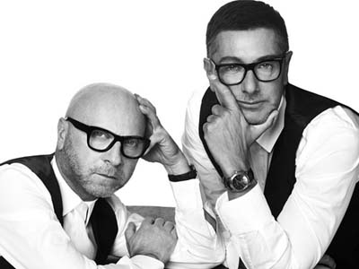
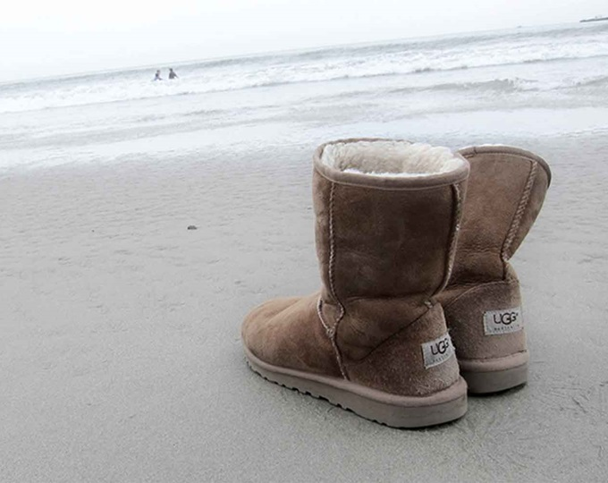

홈 > 브랜드 매거진 > 돌체앤가바나
돌체앤가바나
돌체앤가바나는 이탈리아의 패션·럭셔리 브랜드로, 소재, 실루엣, 로고, 컬렉션 운영이 취향과 지위 신호를 만드는 영역입니다.
산업 분야 패션·럭셔리 · 공개 등급 자료 기반 · 브랜드 평가 4.3 ★

한눈에 보는 브랜드
돌체앤가바나는 이탈리아 기반의 패션·럭셔리 브랜드입니다. 소재, 실루엣, 로고, 컬렉션 운영이 취향과 지위 신호를 만드는 영역으로 분류되며, 브랜드명과 업종, 운영 국가, 공개 로고 여부를 함께 보며 사전 항목의 기본 맥락을 확인할 수 있습니다.
브랜드 관점
돌체앤가바나 항목은 단순한 이름 목록이 아니라 패션·럭셔리 시장 안에서 어떤 역할을 하는지 읽기 위한 기준점입니다. 제품·서비스 범위, 유통 방식, 시각 아이덴티티, 시장 포지션을 함께 비교하면 같은 산업의 다른 브랜드와 차이가 선명해집니다.
시작과 성장
외모만큼 상반된 성향을 가진 도메니코 돌체와 스테파노 가바나가 만났다. 그리고 1985년, 패션 브랜드 돌체앤가바나(Dolce&Gabbana)를 설립했다.
여성복 컬렉션에서 시작한 돌체앤가바나는 점차 라인을 확장하여 거대한 패션 하우스로 성장하고 있다.
브랜드 아이덴티티
돌체앤가바나는 그들의 고향인 시칠리아에 대한 향수를 패션에 투영하고 있다. 특히 축구 스타들에게 많은 영감을 받는다고 밝힌 돌체앤가바나는 축구클럽의 유니폼 디자인뿐 아니라 공간 디자인까지 참여했다.
또한, 돌체앤가바나는 다양한 브랜드와 콜라보레이션 작품을 선보이고 있으며, 그들의 브랜드 정체성과 작품들은 여러 권의 책으로 기록되고 있다.
제품과 서비스
대표 제품과 서비스 정보는 편집 검수 후 공개됩니다.
현재 상태
타임라인
BI/CI 변천사
함께 읽을 브랜드
 패션·럭셔리 · 편집 검수구찌
패션·럭셔리 · 편집 검수구찌구찌는 이탈리아의 패션·럭셔리 브랜드로, 소재, 실루엣, 로고, 컬렉션 운영이 취향과 지위 신호를 만드는 영역입니다.

패션·럭셔리 · 편집 검수어그어그는 이탈리아의 패션·럭셔리 브랜드로, 소재, 실루엣, 로고, 컬렉션 운영이 취향과 지위 신호를 만드는 영역입니다.
 패션·럭셔리 · 편집 검수까르띠에
패션·럭셔리 · 편집 검수까르띠에까르띠에는 패션·럭셔리 브랜드로, 소재, 실루엣, 로고, 컬렉션 운영이 취향과 지위 신호를 만드는 영역입니다.
 패션·럭셔리 · 편집 검수누디진
패션·럭셔리 · 편집 검수누디진누디진는 스웨덴의 패션·럭셔리 브랜드로, 소재, 실루엣, 로고, 컬렉션 운영이 취향과 지위 신호를 만드는 영역입니다.
 패션·럭셔리 · 편집 검수랄프 로렌
패션·럭셔리 · 편집 검수랄프 로렌랄프 로렌는 패션·럭셔리 브랜드로, 소재, 실루엣, 로고, 컬렉션 운영이 취향과 지위 신호를 만드는 영역입니다.
 패션·럭셔리 · 편집 검수롤렉스
패션·럭셔리 · 편집 검수롤렉스롤렉스는 스위스의 패션·럭셔리 브랜드로, 소재, 실루엣, 로고, 컬렉션 운영이 취향과 지위 신호를 만드는 영역입니다.
 패션·럭셔리 · 편집 검수버버리
패션·럭셔리 · 편집 검수버버리버버리는 영국의 패션·럭셔리 브랜드로, 소재, 실루엣, 로고, 컬렉션 운영이 취향과 지위 신호를 만드는 영역입니다.
 패션·럭셔리 · 편집 검수비비안 웨스트우드
패션·럭셔리 · 편집 검수비비안 웨스트우드비비안 웨스트우드는 패션·럭셔리 브랜드로, 소재, 실루엣, 로고, 컬렉션 운영이 취향과 지위 신호를 만드는 영역입니다.